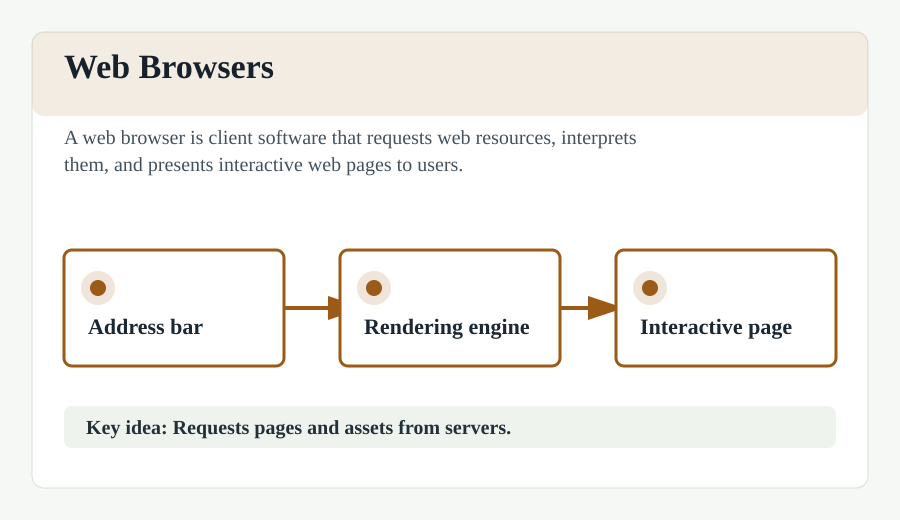

Web Browsers
A web browser is a software application for accessing information on the World Wide Web. When a user requests a web page from a particular website, the web browser retrieves the necessary content from a web server and then displays the page on the user's device.
Popular examples include Google Chrome, Mozilla Firefox, Safari, and Microsoft Edge. Browsers use rendering engines to interpret HTML, CSS, and JavaScript into visual content.
